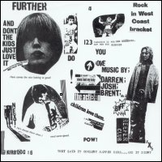

|
Further
"I
Wanna Be A Stranger / They Said It Couldn't Happen Here... and It Didn't!"
This is not a TVPs cover, but this single's back sleeve is a
tribute to TVPs' "And Don't The Kids Just Love It" back sleeve. It also states
that "Paradise is for the sex obsessed, not for the blessed"...
funny!. The song ends with the chorus of TVP's "Geoffrey Ingram" ("just like
Geoffrey Ingram...").
|

[19?? -
Kirbdog - KIRBDOG 16 - 7"] |